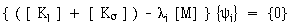

在响应仿真中，有限元 (FE) 模型表示结构的物理模型。通常，可以像对其他结构解算方案类型一样定义几何体、材料属性、网格和边界条件。下表列出了可以在响应仿真中使用的特殊边界条件。
类型 |
描述 |
强迫运动位置 |
强迫运动激励在模型上的位置。这只是一个位置，您可以在对解算方案进行解算之后定义实际的激励。 求解器会根据您定义的强迫运动位置来生成约束模态、等效的附着模态和有效的质量。 可以在仿真导航器的约束容器中创建强制运动位置。 |
节点力作用位置 |
节点力激励在模型上的位置。这只是一个位置，您可以在对解算方案进行解算之后定义实际的激励。 求解器将根据所定义的节点力作用位置生成附着模态。 可以在仿真导航器的载荷容器中创建节点力作用位置。 |
静态偏置载荷 |
对于瞬态事件，这是一个用来缩放结果的恒定载荷(例如，适用于集中质量单元的重力载荷，或者结构上的分布式风载荷)。 可以在仿真导航器中的子工况 — 静态偏置容器中创建静态偏置载荷。 在对解算方案进行解算并创建一个事件之后，会在仿真导航器中该事件的节点下面出现一个静态偏置节点。可以通过右键单击静态偏置节点并选择不激活来将静态偏置结果从响应计算中排除。 |
应力增强载荷 |
加载中结构的硬化或软化取决于微分刚度。可以为任何结构的不同刚度应用预加载。相对于已卸载的刚度，对于一维或二维，且具有轴向或膜载荷的细结构，微分刚度具有重要意义。 求解器使用预加载增加已卸载刚度，以便进行正则模态计算。可以计算微分刚度，并将其与卸载线性刚度相组合，然后将此组合用于正则模态特征值问题。  [ Kl ] = 线性刚度矩阵 [ Kσ ] = 应力刚度矩阵 λi = ωi2 = 固有频率的平方(特征值) [ M ] = 质量矩阵 {ψi} = 模态形状(特征矢量) 可以在仿真导航器中的子工况 — 应力增强容器中创建微分增强载荷。 |
动态载荷 |
在对解算方案解算之后进行缩放的载荷。求解器会为每个动态载荷生成一个载荷集和多个分布式附着模态。之后，您可以在创建激励时指定缩放函数。 动态载荷在应用分布式载荷激励时是必需的，并且还可将其用作准静态分析事件中的静态激励。 可以在仿真导航器中的子工况 — 动态容器中创建动态载荷。 |